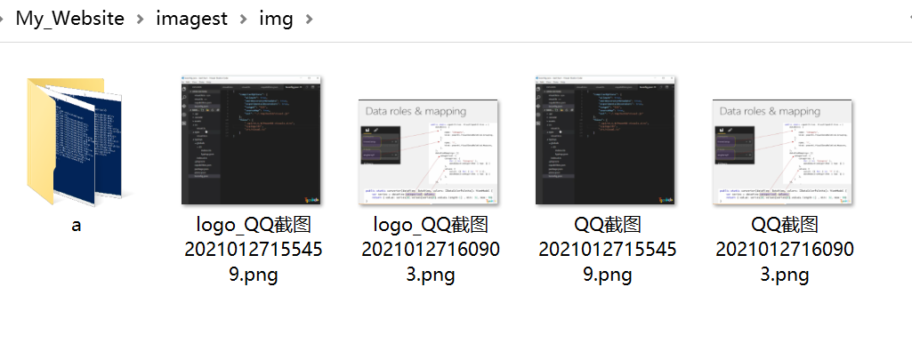
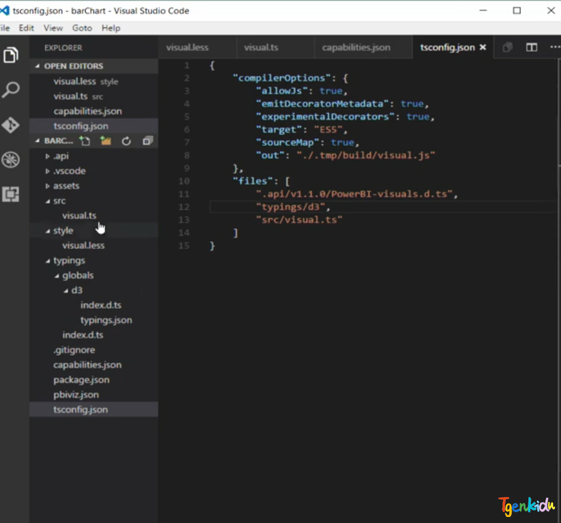

环境准备
安装 images 库
npm install images
安装 imageinfo 库
npm install imageinfo
实现
本例 addimageinfo.js 与 marklogo.png 、imagest文件夹、node_modules 文件夹 在同一目录下。
含子文件也可实现
JS代码
若直接使用需修改一下信息
var logomarkimg = images('./marklogo.png');//水印位置
var rmimgpath = "./imagest/img/";//添加图片文件加位置
var mark = "logo_";//另存图片前缀，若为""则替换原图片
完整代码 addimageinfo.js
//引用文件系统模块
var fs = require("fs");
//引用imageinfo模块
var imageInfo = require("imageinfo");
//引用images模块
var images = require('images');
var logomarkimg = images('./marklogo.png');//水印位置
var rmimgpath = "./imagest/img/";//添加图片文件加位置
var mark = "logo_";//另存图片前缀，若为""则替换原图片
function readFileList(path, filesList) {
var files = fs.readdirSync(path);
files.forEach(function (itm, index) {
var stat = fs.statSync(path + itm);
if (stat.isDirectory()) {
//递归读取文件
readFileList(path + itm + "/", filesList)
} else {
var obj = {};//定义一个对象存放文件的路径和名字
obj.path = path;//路径
obj.filename = itm//名字
filesList.push(obj);
}
})
}
var getFiles = {
//获取文件夹下的所有文件
getFileList: function (path) {
var filesList = [];
readFileList(path, filesList);
return filesList;
},
//获取文件夹下的所有图片
getImageFiles: function (path) {
var imageList = [];
this.getFileList(path).forEach((item) => {
var ms = imageInfo(fs.readFileSync(item.path + item.filename));
ms.mimeType && (imageList.push(item))
});
return imageList;
}
};
//获取文件夹下的所有图片
var photos = getFiles.getImageFiles(rmimgpath);
for (var i = 0; i < photos.length; i++) {
var sourceImgpath = photos[i].path;
var sourceImgname = photos[i].filename;
var sourceImg = images(sourceImgpath + sourceImgname);
var sWidth = sourceImg.width();
var sHeight = sourceImg.height();
var wmWidth = logomarkimg.width();
var wmHeight = logomarkimg.height();
images(sourceImg)
// 设置绘制的坐标位置，右下角距离 10px
.draw(logomarkimg, sWidth - wmWidth - 10, sHeight - wmHeight - 10)
// 保存格式会自动识别
.save(sourceImgpath + mark + sourceImgname + '');
}
运行
在目录下，运行node命令
node ./addimageinfo.js
查看效果
 